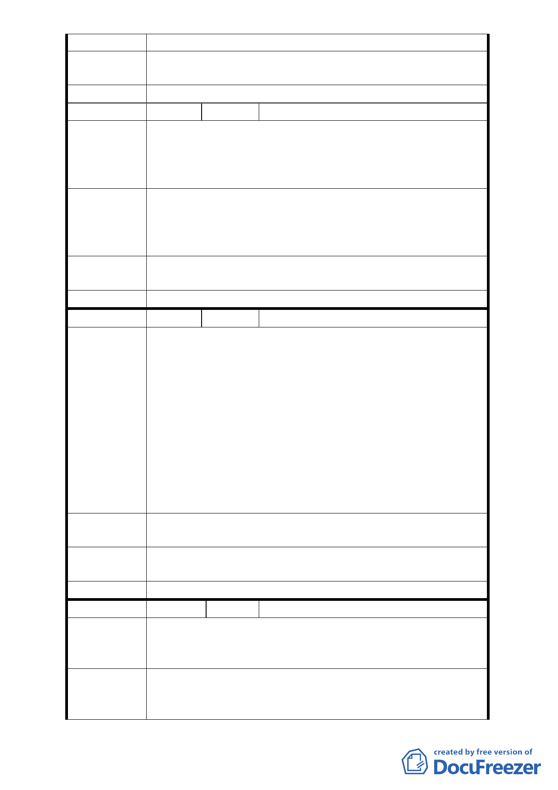

建 議 辦 法 維持現狀
專案小組審
查結論
同陳情案 1
委員會決議 同陳情案 1
編 號 13 陳情人 鄭智衡
政大生活圈內，停車場的空間，可說是絕無僅有，一位難
陳情理由
求。日後增設捷運環狀線政大站，更會雪上加霜。事實上，
現在這塊機關用地早已被拿來做為停車位，可建需求之殷
切。
依據本市停管處 95 年供需調查報告，本區小汽車停車位供
建議辦法
給實在不足。
建議 66 巷以南的原機關用地全數變更為停車場的公共設
施，以造福社區，原公園用地，全部保持原用途。
專案小組審
查結論
同陳情案 1
委員會決議 同陳情案 1
編 號 14 陳情人 鍾秀慧
1. 本人於民國八十五年購屋時該地區為機關及公園用地，
因緊臨河堤，當時購屋之房價已較鄰近區域較高；若僅
因臺北市政府未依原有都市計畫編列預算徵收私有地，
而擬重新變更為住宅用地，市政府顯然違反誠信原則。
2. 景美溪案左岸堤防旁 6 公尺防汛道路，平日皆已雙排停
陳 情 理 由 車，車輛通行時見阻塞，且礙於萬壽橋及道南橋下有涵
洞，該道路拓寬幅度有限；新光路 66 巷僅寬 6 公尺且無
人行道設施，若依計畫書所示(P8)爾後此巷將成為重要
交通要道，將嚴重影響現有居民行的安全。
3. 依計畫書所示，該區用地狹長，若變更為容積率較高之
“第三種住宅區”，將嚴重影響緊鄰建築物之採光面積。
建議辦法
若無法停止此變更計畫，建議考量變更為容積率較低之第
二或第一種住宅區。
專案小組審
查結論
同陳情案 1
委員會決議 同陳情案 1
編 號 15 陳情人 黃蕙娟、陳金治、鄭伊廷
政大生活圈內，目前沒有任何一處社區公園。此計畫更把
陳 情 理 由 原公園預定地面積大砍一半以上，小到只有 0.07 公頃。同
時，旁邊還又要蓋住宅大樓。
1. 最起碼 66 巷以北，應該維持公園用地，才能有綠地的完
建 議 辦 法 整性，同時兼顧基本休憩設施之設置。一個不到 0.1 公
頃的唯一鄰里公園，是本區居民最卑微的請求。
- 13 -